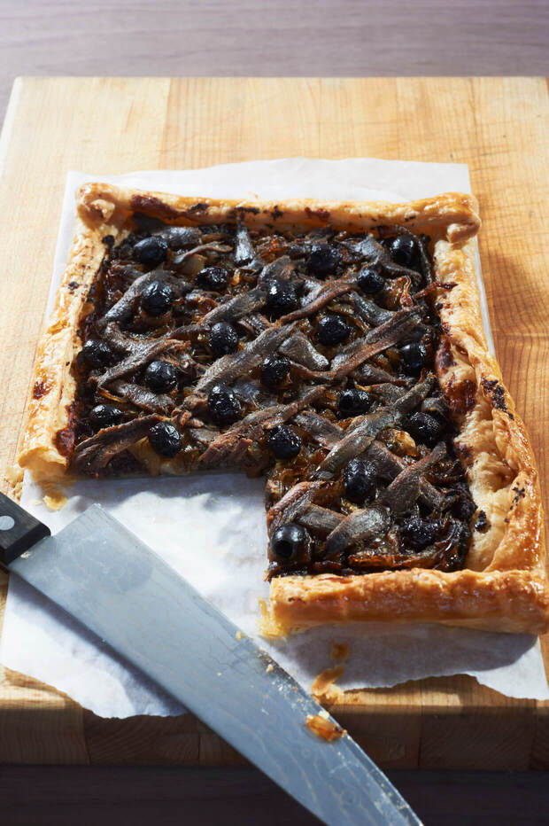

Pissaladiere
[Provencale pizza]

Description
"Marseille is possibly the greatest city of the pizza: there are more than a hundred mobile pizza vans. The variety may not be that of Naples but the standard is unquestionably higher because, by Neapolitan standards, the pizza is incorrect. It is often closer to a tarte fine than to a 'real' pizza. Better always trumps real. This version is better" - Jonathan Meades
Ingredients
- 2kg sweet onions
- 400g anchovies
- 1 sheet pure butter puff pastry
- Black olives
- Olive oil
Steps
- Cook the thinly sliced onions and half the anchovies at a very low heat for 2 hours till the onions are reduced and very soft and the anchovies have dissolved.
- Spread this mix on the pastry leaving a 1cm border. Brush the border with olive oil.
- Decorate the top with the rest of the anchovies and the pitted olives. Bake in a medium oven for 20-25 minutes.
Homepage